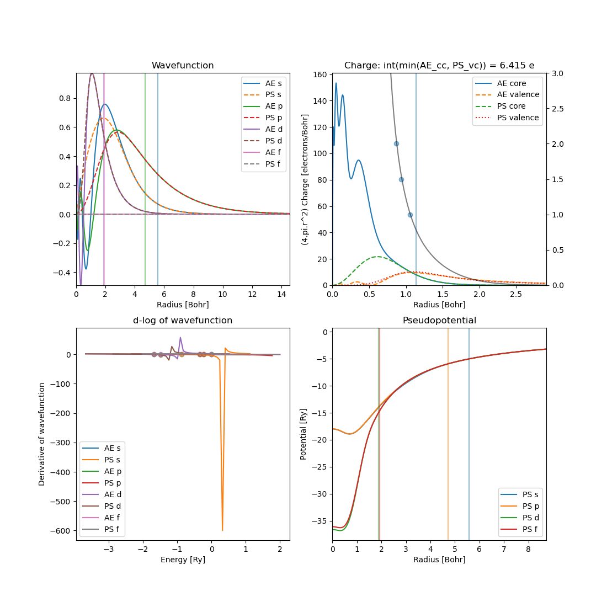

Plotting atom output
Suggestions and improvements to this utility is most welcome!
Creating pseudopotentials using atom will often require users to post-analyze the output of the program.
Here we aid this visualization process by adding a command line interface for plotting details of the output via a simple command.
Command line tool
It may be called using
stoolbox atom-plot <atom-output-directory>
which by default will create 4 plots.
{kind=link}
It mimicks the shell commands provided by atom for plotting with some additional details.
By default the program will output details regarding the core-charge and valence charge overlap (use full for determining whether core-corrections should be used).
Total charge in atom: 82.00213
Core-correction r_pc [2.0, 1.5, 1]: [0.8656676967, 0.9330918445, 1.0573356051] Bohr
Here it is for lead and the first line gives the total charge in the atom calculation. Note that the deviation stems from the different integration schemes used in the toolbox and in atom. The 2nd line prints details about the where the core charge is some factor larger than the pseudo potential valence charge. In this case it prints the radii \(r_i\) where \(\rho_{\mathrm{core}}(r_i)/\rho_{\mathrm{valence}}(r_i)\) equals \(2\), \(1.5\) and \(1\).
The full overlap is printed in the title of the charge plot. It is calculated as:
Input generation
The tool can also be used to generate the input files for atom. While it is possible to read
input files from INP files, one may also define a specific Atom object which
will be used to generate the input file.
from sisl import *
from sisl_toolbox.siesta.atom import *
s = AtomicOrbital(n=5, l=0, q0=1., R=2.4)
p = AtomicOrbital(n=5, l=1, q0=0., R=1.6)
d = AtomicOrbital(n=4, l=2, q0=10., R=1.4)
f = AtomicOrbital(n=4, l=3, q0=0., R=2.)
Ag = Atom("Ag", orbitals=[s, p, d, f])
atom_input = AtomInput(Ag, rcore=2., xc="pb", flavor="tm2")
# write the INP file in current directory
atom_input.pg()